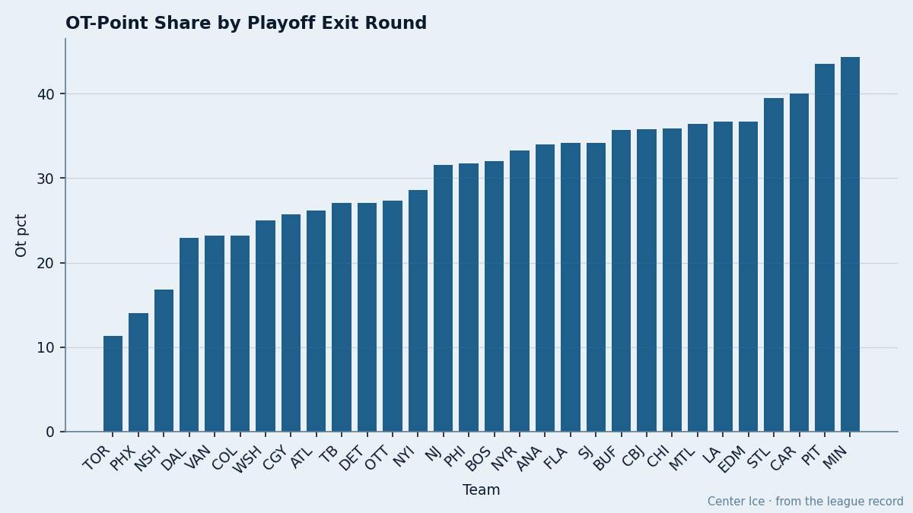

Conference Finalists Earn 23% of Points in Overtime. The Non-Playoff Average Is 34%.
The OT share that got Phoenix a playoff spot in March turned out to be the league's survival filter. The pattern held through every round it entered.
 Doug ReimerAnalytics editor, ex-video coach · The Slot Report
Doug ReimerAnalytics editor, ex-video coach · The Slot Report
The piece
 Phoenix Coyotes held the West's final playoff spot by 3 points in March on the back of 2 overtime wins. At the time I flagged that PHX's regulation-only lead over
Phoenix Coyotes held the West's final playoff spot by 3 points in March on the back of 2 overtime wins. At the time I flagged that PHX's regulation-only lead over  Columbus Blue Jackets was 14 points and over
Columbus Blue Jackets was 14 points and over  St. Louis Blues was 16. The spot was built on coin flips. Six weeks later, the coin-flip filter is measurable across the whole league.
St. Louis Blues was 16. The spot was built on coin flips. Six weeks later, the coin-flip filter is measurable across the whole league.
The method: take each club's total points, subtract its regulation wins × 2, divide the remainder by total points. What's left is the share of the season's point total that came from overtime outcomes (2 for an OT win, 1 for an OT loss). The result groups the 30 clubs almost perfectly by how far they advanced this spring.
| Outcome | Teams | Avg OT share of points |
|---|---|---|
| Conference Finals | 4 | 23.3% |
| Made playoffs, eliminated | 12 | 28.7% |
| Missed playoffs | 14 | 34.1% |

The Conference Finals group averages 23.3%. The non-playoff group averages 34.1%. That spread is the widest the desk has found between OT share and how far a team advances.
The four who survived, and the one who shouldn't have
 Toronto Maple Leafs enters Game 7 of the Eastern Conference Final with 11.3% of their 133 points from overtime. That is the lowest in the league. PHX is next at 14.0%. The Maple Leafs went to overtime 10 times in 82 games, the fewest in the league.
Toronto Maple Leafs enters Game 7 of the Eastern Conference Final with 11.3% of their 133 points from overtime. That is the lowest in the league. PHX is next at 14.0%. The Maple Leafs went to overtime 10 times in 82 games, the fewest in the league.
 Dallas Stars sits at 22.9% and leads
Dallas Stars sits at 22.9% and leads  Mighty Ducks of Anaheim 4-1 in the Western Conference Final.
Mighty Ducks of Anaheim 4-1 in the Western Conference Final.  Washington Capitals at 25.0% has pushed the top seed to seven games. Three of four Conference Finalists are in the bottom six on this metric.
Washington Capitals at 25.0% has pushed the top seed to seven games. Three of four Conference Finalists are in the bottom six on this metric.
Mighty Ducks of Anaheim is the exception. At 34.0%, Anaheim's OT share matches the average for teams that missed the playoffs entirely. They went to overtime 24 times, the most in the league. Their 15 overtime losses are the most in the league. And they are one game from eliminating Dallas, the Presidents' Trophy runner-up, because in the spring those extra games became wins.
How the 16 playoff teams rank
| Club | OT share | Result |
|---|---|---|
| Toronto Maple Leafs | 11.3% | Conference Finals |
| Phoenix Coyotes | 14.0% | Round 2, eliminated |
 Nashville Predators Nashville Predators | 16.8% | Round 1, eliminated |
| Dallas Stars | 22.9% | Conference Finals |
 Vancouver Canucks Vancouver Canucks | 23.2% | Round 1, eliminated |
 Colorado Avalanche Colorado Avalanche | 23.2% | Round 1, eliminated |
| Washington Capitals | 25.0% | Conference Finals |
 Detroit Red Wings Detroit Red Wings | 27.1% | Round 1, eliminated |
 Tampa Bay Lightning Tampa Bay Lightning | 27.1% | Round 2, eliminated |
 New York Islanders New York Islanders | 28.6% | Round 1, eliminated |
 New Jersey Devils New Jersey Devils | 31.6% | Round 1, eliminated |
 Boston Bruins Boston Bruins | 32.0% | Round 1, eliminated |
| Mighty Ducks of Anaheim | 34.0% | Conference Finals |
 Edmonton Oilers Edmonton Oilers | 36.7% | Round 2, eliminated |
 Carolina Hurricanes Carolina Hurricanes | 40.0% | Round 1, eliminated |
 Pittsburgh Penguins Pittsburgh Penguins | 43.5% | Round 2, eliminated |
Pittsburgh Penguins at 43.5% is the highest OT share in the entire league. They survived New Jersey Devils in Round 1 on five one-goal games and an overtime winner, then pushed Toronto Maple Leafs to seven. The metric says they were always the most fragile team to make the bracket. They proved it by being the first Round 2 exit.
Why the filter works
Overtime is variance. A team that accumulates points there has won some close games it could have lost and lost some it could have won. In the regular season, those outcomes wash into noise. In a best-of series, the variance concentrates: a single OT goal decides a Game 7. Teams that built their seasons on those moments have already proven they can't control them, and the spring takes away the 82-game buffer that hides the problem.
Toronto Maple Leafs at 11.3% controlled 59 regulation wins. Washington Capitals at 25.0% controlled 39. Toronto's ceiling is the same whether the puck bounces or not. Washington's depends on it. Game 7 tomorrow tells you which model survives sudden death.